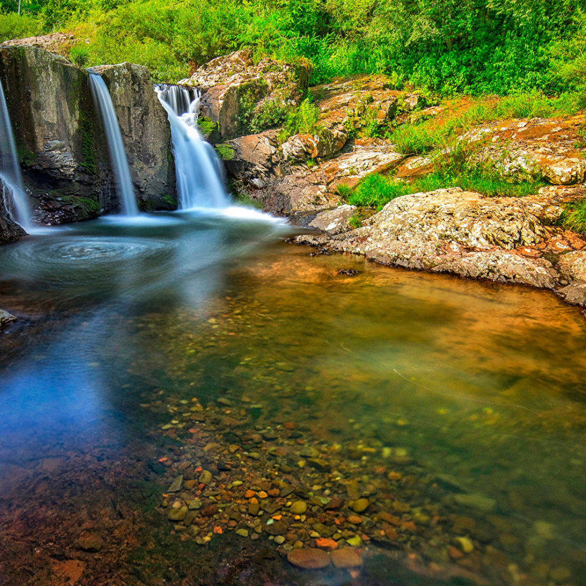

O Rio Grande do Sul é um estado localizado na região Sul do Brasil. Sua capital é Porto Alegre. O estado faz divisa com Argentina e Uruguay, além dos estados de Santa Catarina O Rio Grande do Sul possui 497 municípios. Entre as cidades mais conhecidas estão Caxias do Sul, Pelotas, Santa Maria, Passo Fundo e Gramado. A economia do estado é baseada na agropecuária, indústria, comércio e turismo. O Rio Grande do Sul é conhecido pela cultura gaúcha, pelo chimarrão, churrasco e pelas tradições dos pampas.

Voltar